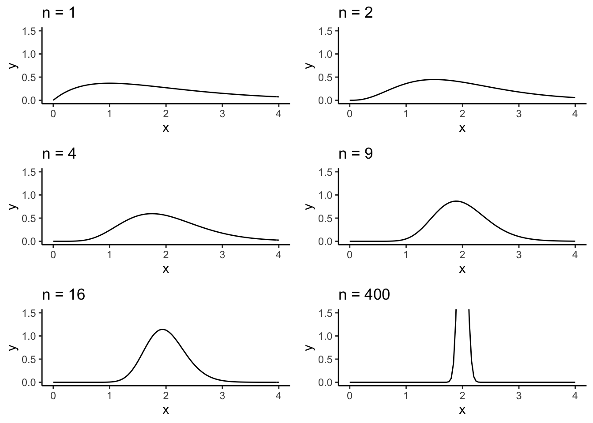
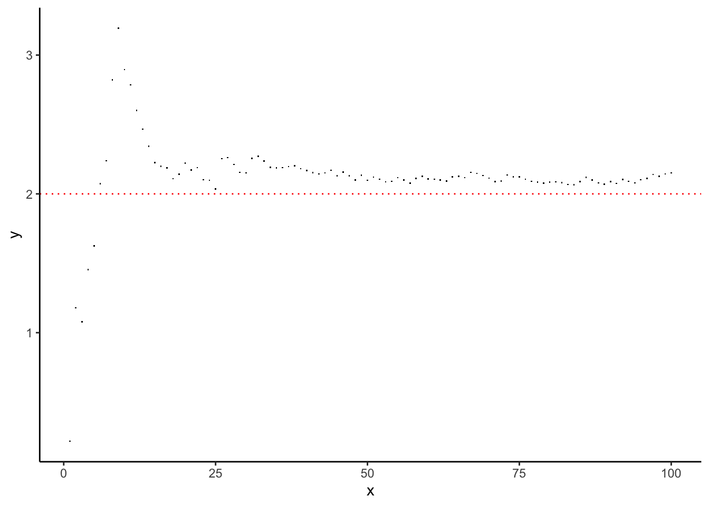
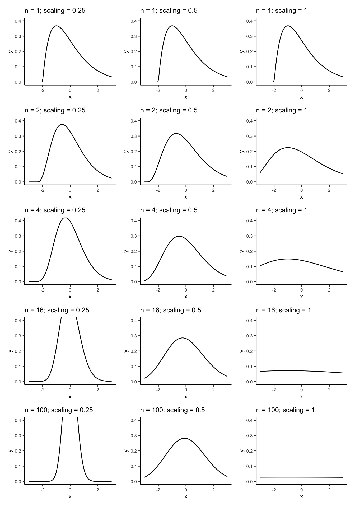
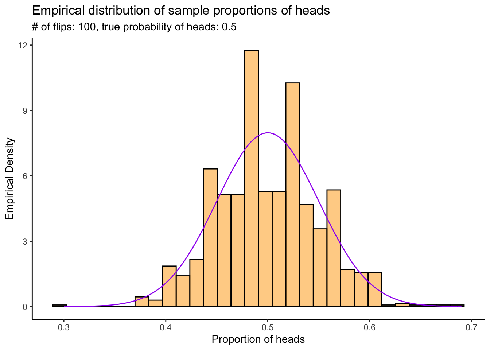

Chapter 3 Introduction to Statistics: Law of Large Numbers and Central Limit Theorem
Statistics is the study of uncertainty and variability. This chapter introduces the two main physical laws which govern variability: the Law of Large Numbers and the Central Limit Theorem; and describes how these laws are used in the study of uncertainty.
This chapter follows chapters 13 and 14 in A Modern Introduction to Probability and Statistics (MIPS).
3.1 Law of Large Numbers (Chapter 13)
The Law of Large Numbers (LLN) states that if you take independent samples from a well-behaved probability distribution, their sample mean converges in probability to the true mean. Specifically, if \(X_{1},\ldots,X_{n}\overset{iid}{\sim}F\) and \(EX_{1} = \mu\) and \(\text{Var}(X_{1}) = \sigma^{2} < \infty\) and \(\bar{X}_{n} = (1/n)\sum_{i=1}^{n}X_{i}\) then \[ \bar{X}_{n}\overset{p}{\to}\mu \] as \(n\to\infty\). We will investigate the LLN computationally through simulations.
Load the packages we need:
library(tidyverse)
library(patchwork) # For arranging plots
options(digits = 2) # Print numbers with only 2 digitsConsider \(X_{1},\ldots,X_{n}\overset{iid}{\sim}\text{Gamma}(\alpha,\beta)\). Their mean is \(EX_{1} = \alpha/\beta\). If we take a sample from this distribution and calculate \(\bar{X}_{n}\), we should get something close to \(\alpha/\beta\). If we make \(n\) larger, we should get something closer. The LLN tells us that we can always make \(n\) large enough such that we get as close as we want with as high a probability as we want.
To simulate from a \(\text{Gamma}(\alpha,\beta)\) distribution in , use the
rgamma function:
# Simulate from a gamma
# Type ?rgamma to get information on the parametrization
# There are three named parameters: shape, scale, and rate. Rate = 1/scale.
# The distribution has mean shape * scale, or shape / rate.
# The parametrization in the book is the "rate" parametrization.
# Always read the docs to understand what the parameters are.
#
# Simulate with shape = 2 and rate = 1, so mean = 2 and variance = ? (exercise)
rgamma(1,shape = 2,rate = 1)[1] 1.7 [1] 1.14 3.97 2.55 0.76 2.15 1.25 0.08 1.64 3.78 2.71We can plot the density of the gamma sample mean for various \(n\). These densities should have mean \(\alpha/\beta = 2/1 = 2\).
Exercise: if \(X_{1},\ldots,X_{n}\overset{ind}{\sim}\text{Gamma}(\alpha_{i},\beta)\) then for any \(b\), \(b\times \sum_{i=1}^{n}X_{i} \sim \text{Gamma}\left(\sum_{i=1}^{n}\alpha_{i},\beta/b\right)\). Use this to derive the distribution of \(\bar{X}\) and (hence) explain what the below code is doing.
This is the left side of Figure 13.1 in MIPS:
# Define a function to compute the density
# Fix the scale and shape arguments at defaults of what's used in the book
# You can play around with these.
gamma_samplemean_density <- function(x,n,shape = 2,rate = 1) {
# x: point to evaluate the density at
# n: sample size
# Just use the dgamma function
dgamma(x,shape = n * shape,rate = n*rate)
}
# Plot it for various n
# Define a function to make the plot
plot_for_n <- function(n) {
# Create a function with the n argument fixed
densfun <- purrr::partial(gamma_samplemean_density,n = n)
# Plot using ggplot
tibble(x = c(0,4)) %>%
ggplot(aes(x = x)) +
theme_classic() +
stat_function(fun = densfun) +
coord_cartesian(xlim = c(0,4),ylim = c(0,1.5)) +
labs(title = stringr::str_c("n = ",n))
}
# Create the plots and arrange them
# You need to have the 'patchwork' package
# loaded for this to work
# library(patchwork)
(plot_for_n(1) | plot_for_n(2)) /
(plot_for_n(4) | plot_for_n(9)) /
(plot_for_n(16) | plot_for_n(400))
The density of the sample mean appears centred at \(2\) and also appears to concentrate around \(2\). The LLN says that the sample mean should converge in probability to \(2\) in this example which would correspond to a density which has a point mass at \(2\) and is zero everywhere else. It appears like this might be happening.
We can get a better look at “where the sample mean is going” by doing the following:
Simulate a \(\text{Gamma}(2,1)\) sample of size \(n\) for some really big \(n\),
Calculate the the running average of this: for each \(m = 1,\ldots,n\), compute \(\bar{X}_{m} = (1/m)\sum_{i=1}^{m}X_{i}\),
Plot \(\bar{X}_{m}\) against \(m\). \(\bar{X}_{m}\) should get closer and closer to \(2\) as \(m\to n\) (…probably).
We do this as follows:
set.seed(54768798) # So I can reproduce these results
# Simulate one experiment of size 500
n <- 100
alpha <- 2
beta <- 1
gamma_experiment <- rgamma(n = n,shape = alpha,rate = beta)
# Compute the running average- a vector where the nth component is the average
# of the first n terms in gamma_experiment
runningaverage <- cumsum(gamma_experiment) / 1:length(gamma_experiment)
# Plot, remembering that the true mean is 2 / 1 = 2
tibble(x = 1:length(runningaverage),
y = runningaverage) %>%
ggplot(aes(x = x,y = y)) +
theme_classic() +
geom_point(pch = ".") +
geom_hline(yintercept = alpha / beta,colour = "red",size = .5,linetype = "dotted")
Is this what you expected to see?
Exercise: What happens when you increase the number? Try it for \(n = 1,000, n = 10,000\), and so on.
What happens if you break the assumptions of the LLN, that \(\text{Var}(X_{1}) < \infty\)? The Cauchy distribution has some of the worst mathematical properties of any “named” probability distribution, and so is often used to illustrate what happens when assumptions of theorems aren’t met. It has \(EX^{r} = \infty\) for any \(r\geq 1\) so has no finite mean, variance, etc.
Let’s recreate the running average experiment for a random sample \(X_{1},\ldots,X_{n}\overset{iid}{\sim}\text{Cauchy}(\mu,\sigma)\):
set.seed(4235) # So I can reproduce these results
# Simulate one experiment of size 500
n <- 500
mu <- 2
sigma <- 1
cauchy_experiment <- rcauchy(n = n,location = mu,scale = sigma)
# Compute the running average- a vector where the nth component is the average
# of the first n terms in gamma_experiment
runningaverage <- cumsum(cauchy_experiment) / 1:length(cauchy_experiment)
# Plot, remembering that the true mean is 2 / 1 = 2
tibble(x = 1:length(runningaverage),
y = runningaverage) %>%
ggplot(aes(x = x,y = y)) +
theme_classic() +
geom_point(pch = ".") +
geom_hline(yintercept = mu,colour = "red",size = .5,linetype = "dotted")
Is this what you expected to see? Should you expect to see anything in particular?
Exercise: repeat this for the Pareto distribution.
You can simulate from the Pareto distribution using the rpareto
function in the actuar package. Type install.packages("actuar") and then
actuar::rpareto. Type ?actuar::rpareto to get help on using this function.
Figuring out how to use the function is part of the exercise. Read up on the pareto
distribution in MIPS or on Wikipedia or whatever. What do you expect this plot to
show? Reading up on the distribution is also part of the exercise.
3.1.1 Extended example: the probability of heads
As an extended example, consider trying to figure out what the probability of heads is for a fair coin, just based on flipping the coin a bunch of times. We can use the LLN to address this challenge.
Let \(X\) be a random variable which takes values \(0\) and \(1\) if the coin comes up tails or heads on any given flip. The specific event that we are interested in is whether the coin comes up heads on any given flip. \(p = \text{P}(X = 1)\) is hence the probability of heads and \(1-p = \text{P}(X = 0)\) is the probability of tails. We also have \(EX = 0\times (1-p) + 1\times p = p\). We can hence see what \(p\) must be by flipping the coin a bunch of times, computing the sample proportion of flips that are heads, and then seeing where this sample proportion appears to be “going”.
We do this as follows:
# Function to flip the coin n times, and return a sequence of 1 if heads and 0 if tails
# for each flip.
# Use the rbinom function to simulate from a bernoulli/binomial distribution.
flip_the_coin <- function(n,p) {
# n: number of times to flip the coin.
# p: probability of heads
# Returns a vector of length n containing the results of each flip.
rbinom(n,1,p)
}
# Function to flip the coin n times and compute the
# sample proportion of heads
sample_proportion_of_heads <- function(n,p) {
# Returns a number representing the sample proportion of heads
# in n flips
mean(flip_the_coin(n,p))
}
# Try it out:
sample_proportion_of_heads(10,.5)[1] 0.4[1] 0.53[1] 0.47Exercise: create a plot of the running average of sample proportions of heads, similar to the above plots for the Gamma and Cauchy. How many times do you think you need to flip the coin before the result is an accurate estimate? Does this change for different values of \(p\)?
3.2 Central Limit Theorem (Chapter 14)
The LLN says where the sample mean goes, and the Central Limit Theorem (CLT) says how it gets there. The CLT lets us approximate the probability that the sample mean is any distance we like from the true mean. We will use this later when we are using the sample mean to estimate the true mean, and want to quantify the uncertainty in our estimate.
Under the same conditions as the LLN, the CLT says that the distribution of the standardized sample mean: \[ Z_{n} = n^{1/2}\left(\frac{\bar{X} - \mu}{\sigma}\right) \] converges to a standard Normal: \[ Z_{n}\overset{d}{\to} Z\sim \text{N}(0,1) \] as \(n\to\infty\).
The concept of “converging to” is a little bit less intuitive for a whole distribution compared to just for a single number. It means that for any set \(A\subseteq\mathbb{R}\), we have \(\lim_{n\to\infty}P(Z_{n}\in A) = P(Z\in A)\). This is very convenient, because we often don’t know how to use \(Z_{n}\) to calculate probabilities, but \(Z\) has a very well-known distribution so it is much easier to use it to calculate probabilities. We use probabilities calculated from \(Z\) to replace those which we would like to calculate about \(Z_{n}\).
We can better understand this concept through simulation.
First, let’s investigate the scaling power on \(n\) when standardizing averages. In order for convergence in distribution to occur, the variance of the converging variable \(Z_{n}\) must stabilize, \(\text{Var}(Z_{n})\to\text{constant}\). If you multiply by the wrong power of \(n\), the variance of \(Z_{n}\) will go either to \(0\) or \(\infty\) and its distribution will not converge.
Exercise: derive the probability density of \(Y = n^{p}(\bar{X} - \mu)\) when \(X_{1},\ldots,X_{n}\overset{iid}{\sim}\text{Gamma}(2,1)\). Hint: look at the code below. How do I compute this? What formula am I using?
Multiplying \((\bar{X} - \mu)\) by \(n^{1/4}\) isn’t enough to to stabilize the variance in the distribution, \(n^{1}\) is too much, and \(n^{1/2}\) is just right. We can see this as follows:
scalingdensity <- function(y,n,p) {
dgamma(
x = y*n^(-p) + 2,
shape = 2 * n,
rate = n
) * n^(-p)
}
plotscalingdensity <- function(n,p) {
dens <- purrr::partial(scalingdensity,n = n,p = p)
tibble(x = c(-3,3)) %>%
ggplot(aes(x = x)) +
theme_classic() +
stat_function(fun = dens) +
coord_cartesian(xlim = c(-3,3),ylim = c(0,.4)) +
labs(title = stringr::str_c("n = ",n,"; scaling = ",p)) +
theme(text = element_text(size = 8))
}
# Plot them all and arrange
( plotscalingdensity(1,.25) | plotscalingdensity(1,.5) | plotscalingdensity(1,1) ) /
( plotscalingdensity(2,.25) | plotscalingdensity(2,.5) | plotscalingdensity(2,1) ) /
( plotscalingdensity(4,.25) | plotscalingdensity(4,.5) | plotscalingdensity(4,1) ) /
( plotscalingdensity(16,.25) | plotscalingdensity(16,.5) | plotscalingdensity(16,1) ) /
( plotscalingdensity(100,.25) | plotscalingdensity(100,.5) | plotscalingdensity(100,1) )
On the left the scaling is too little, and the distribution will become infinitely peaked (zero variance) as \(n\) gets bigger (try it!). This distribution is not useful for calculating probabilities.
On the right the scaling is too much and the distribution becomes flat (infinite variance). This distribution is not useful for calculating probabilities.
In the middle, we have scaled by a good amount. The distribution appears to become closer and closer to a standard Normal distribution as \(n\) gets bigger. This distribution is useful for calculating probabilities.
You can play around with different scaling values and sample sizes.
Figure 14.2 is like the centre column of Figure 14.1 with a normal density curve overlayed.
Exercise: recreate the left column of Figure 14.2 by doing the following:
- Replace
expand.grid(n = c(1,2,4,16,100),p = c(1/4,1/2,1))byexpand.grid(n = c(1,2,4,16,100),p = c(1/2))in the above code that generates the plots (and set the values ofnrowandncolappropriately as well). - Add a normal density line. You have to modify the
plotscalingdensity. Add a layer as follows:stat_function(fun = dnorm,linetype = "dotted").
We can compute probabilities involving the standard normal distribution function
in R using the pnorm function. Suppose we compute the sample mean from a \(\text{Gamma}(2,1)\)
random sample:
[1] 2We know the true mean is \(2\). How “close” is 2.05 to \(2\)? We can quantify this by asking: how probable is it to get a sample mean of 2.05 or greater in a sample of size 500 from a \(\text{Gamma}(2,1)\) distribution?
# The actual probability is (why? remember a previous exercise...):
1 - pgamma(gammamean,shape = 2*n,rate = 1*n)[1] 0.22[1] 0.22# Why are we doing 1 - pnorm()? pnorm() gives P(X < x) for X ~ N(0,1)
# To get P(X > x), you can do
pnorm(Zn,lower.tail = FALSE)[1] 0.22Pretty close approximation!
We could also approximate this probability by generating a bunch of gamma random samples and seeing how often their averages are > 2.05:
N <- 10000
exceeded <- numeric(N)
for (i in 1:N) {
samp <- rgamma(n,shape = 2,rate = 1)
mn <- mean(samp)
exceeded[i] <- as.numeric(mn > gammamean)
}
mean(exceeded)[1] 0.22Exercise: why does this simulation give us an idea of \(P(\bar{X} > 2.05)\)? Hint: recall the coin flipping example: consider \(\bar{X} > 2.05\) to be like a coin coming up heads and estimate this probability using the method we came up with in that example.
3.2.1 Extended example: the probability of heads
In our coin example from the LLN section, we investigated how many flips were needed to get an average number of heads that was close (in probability) to the true probability of heads. Using the CLT, we can get a probabilistic quantification of the error rate– how far away from the truth the proportion of heads is likely to be.
Similar to the LLN experiment, we’re goin to flip the coin a bunch of times and calculate the sample proportion of heads; then we’re going to do that a bunch of times and plot a histogram of the sample proportions. The CLT tells us that as long as each experiment has enough flips, the resulting probability density of the sample proportion of heads should be approximately Normal.
N <- 1000 # Number of experiments to do
n <- 100 # Number of times to flip the coin in each experiment
p <- .5 # True probability of heads
experiments <- numeric(N)
for (i in 1:N) {
experiments[i] <- sample_proportion_of_heads(n,p)
}
# Plot them
tibble(x = experiments) %>%
ggplot(aes(x = x)) +
theme_classic() +
geom_histogram(aes(y = ..density..),bins=30,colour="black",fill="orange",alpha = .5) +
stat_function(fun = dnorm,args = list(mean = p,sd = sqrt(p*(1-p)/n)),colour = "purple") +
labs(title = "Empirical distribution of sample proportions of heads",
subtitle = stringr::str_c("# of flips: ",n,", true probability of heads: ",p),
x = "Proportion of heads",
y = "Empirical Density") +
scale_x_continuous(breaks = seq(0,1,by=.1))
Exercises:
Recreate the above plot with \(n = 10, 50, 100, 1000\) and \(p = .4, .2, .8, .01, .99\). What do you see? Is the accuracy of the normal approximation to this distribution affected by \(n\) or \(p\)?
What are the mean and variance of the distribution of sample proportions of heads? (Hint: what are the mean and variance of a \(\text{Binom}(n,p)\) random variable?)
Recreate the above plot, but scale the sample proportion of heads appropriately such that it has mean \(0\) and variance \(1\).